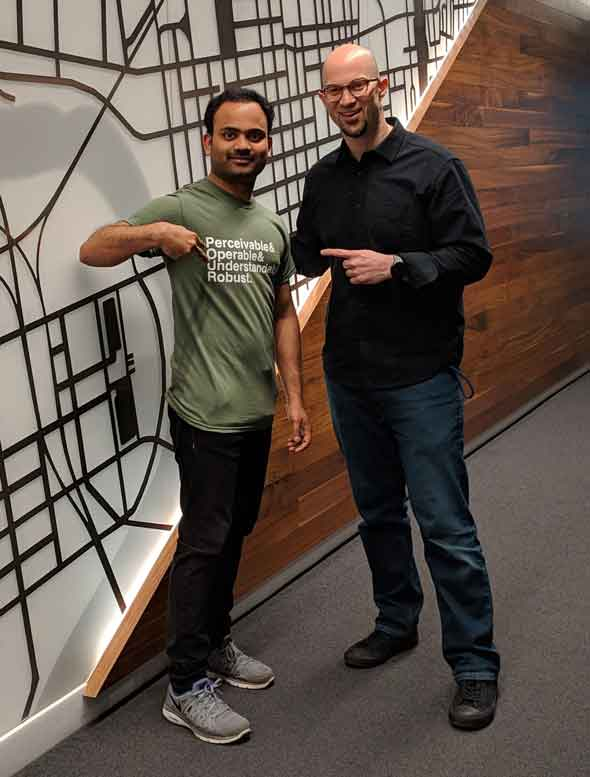

Marc Solomon | Digital Accessibility Professional
I am currently an Accessibility Lead at JP Morgan Chase in Columbus, OH. I am passionate about digital inclusion and have extensive exprience with Android, iOS, and web accessibility.
I am currently an Accessibility Lead at JP Morgan Chase in Columbus, OH. I am passionate about digital inclusion and have extensive exprience with Android, iOS, and web accessibility.